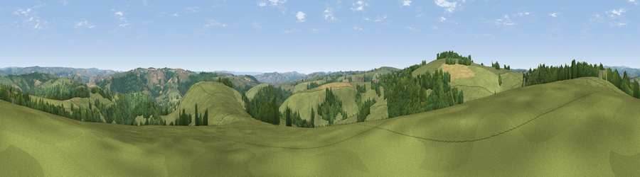

Viewpoint near Oakford Bridge
#16693 in England · top 28% of its area beats it · near Oakford BridgeWhere it is
The exact computed spot (SS 92775 19625). Click the marker for map links.
The view, rendered

A 360° render of this exact spot computed from the terrain model, tree cover and land cover — summer colours, afternoon light, calibrated against photographs of famous viewpoints. Real trees, hedges and buildings will differ in detail.
The panorama
Grey silhouette: terrain skyline in each direction (720 bearings, Earth curvature and refraction included). Dashed green: skyline with trees (+15 m) and buildings (+8 m) as obstacles. Blue strip: how far the ground is visible on each bearing.
Where the view opens
Wedge length = distance to the farthest visible ground on that bearing (vegetation-aware). Rings at 10, 25 and 50 km.
What fills the view
67% grassland · 29% woodland · 4% cropland
Angular shares of the visible panorama (visual magnitude), not map area. Landscape diversity 0.34 (0–1 Shannon).
Key numbers
More beautiful places nearby
The staircase of upgrades: each row has a higher view potential than everything closer. Driving times are estimates from straight-line distance, calibrated against real road routing — check an actual route before setting out.
| Place | Direction | Drive | Score |
|---|---|---|---|
| Ash Hill | WSW · 1 km | ~3 min | 56.5 |
| Viewpoint near Loxbeare | SW · 3 km | ~8 min | 64.0 |
| Stoodleigh Beacon | WSW · 4 km | ~10 min | 66.7 |
| Viewpoint near Skilgate | NNE · 10 km | ~19 min | 72.5 |
| Cadbury Castle | S · 14 km | ~26 min | 73.7 |
| Fursdon Hill | S · 15 km | ~26 min | 76.2 |
| Viewpoint near Bradninch | SSE · 16 km | ~28 min | 77.7 |
| Raddon Hills | S · 17 km | ~29 min | 78.2 |
50.96603, -3.52833 · source: screening · position refined by local search. Computed location — check access rights before visiting.